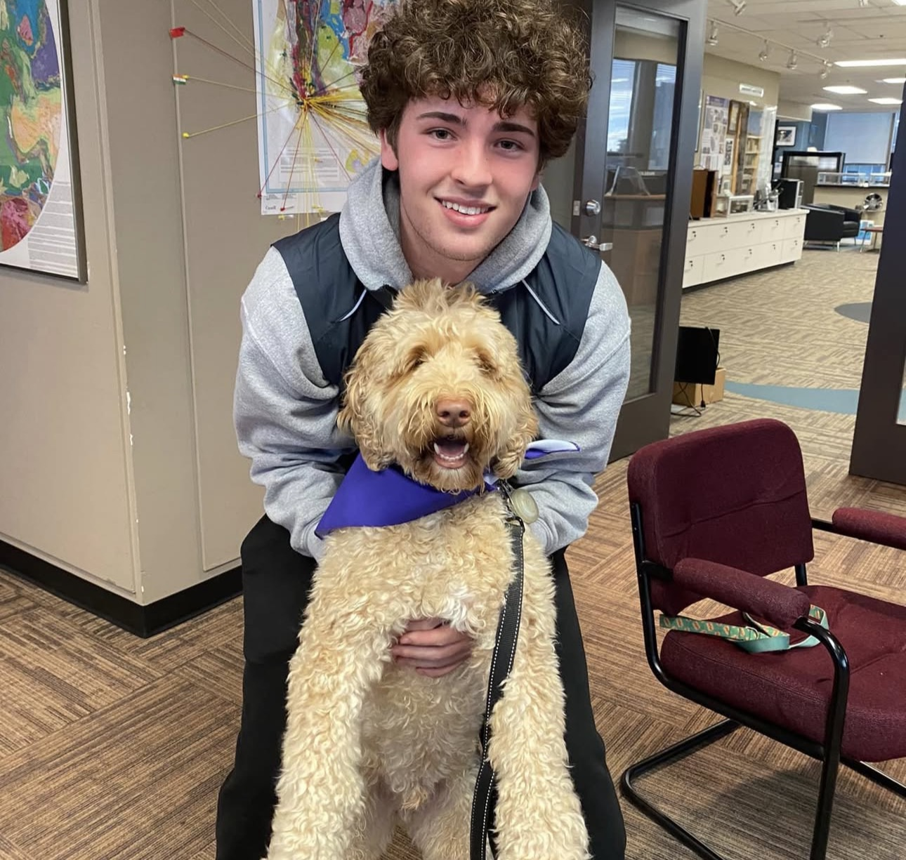

Professional Bio
My name is Jackson Fraser, and I’m an engineering student with a strong interest in technology, programming, and problem-solving. I’ve always enjoyed building things, whether it was my own gaming PC at age 13 or the projects I’ve taken on in programming courses over the years. I’m someone who learns best by doing, and I like challenging myself with work that pushes my skills further.
Skills and Interests
I have a strong interest in technology, programming, and engineering, and I enjoy solving problems by building real, functional projects. I have been coding for years, and I am experienced with languages such as C++, Java, HTML, CSS, JavaScript, and Python. Furthermore, I’ve developed a solid understanding of electronics, robotics, and general computer science concepts. I’m bilingual and comfortable working with others through my experiences tutoring, volunteering, and working with kids, whether it has been babysitting or coaching. Outside of academics, fitness has become a major part of my life. I’ve been training consistently in the gym for over four years, which has taught me discipline, consistency, and how to push myself mentally and physically. I also enjoy learning about cars, keeping up with new technology, and exploring creative projects that combine my technical skills with real-world problem-solving. In the near future, I hope to buy an early 2000s Civic Si and do work on it to make it faster and sportier looking. I have played sports all of my life including soccer, hockey, basketball, baseball, gymnastics, muay thai, and recently I have been obsessed with golf.
Projects and Achievements
One of my main first-year projects is the design of an Universal Cable with Attachable Heads that reduces cable waste and improves convenience for users. You can read more about this project on my Projects page.
Throughout my time in programming, I’ve completed several major projects that helped strengthen my technical skills, including developing games in both C++ and Java and exploring 3D environments, physics, and problem-solving. I have also made several websites using HTML and CSS including this one. Furthermore, I completed the UBC Future Global Leaders Introduction to Engineering course, which gave me valuable insight into engineering disciplines and confirmed my interest in pursuing software engineering at the university level. Beyond academics, I’ve built strong leadership and communication skills through my years working with Coastal FC, where I supported field operations, equipment organization, and event logistics, as well as earlier roles in babysitting, dog caregiving, and volunteering at French Carnaval events. These experiences taught me responsibility, patience, professionalism, and maturity, and they’ve helped the way I approach teamwork, learning, and personal growth.
Contact
If you would like to connect with me about my work or future opportunities, you can reach me at:
Email: jackosnfraser2007@gmail.com